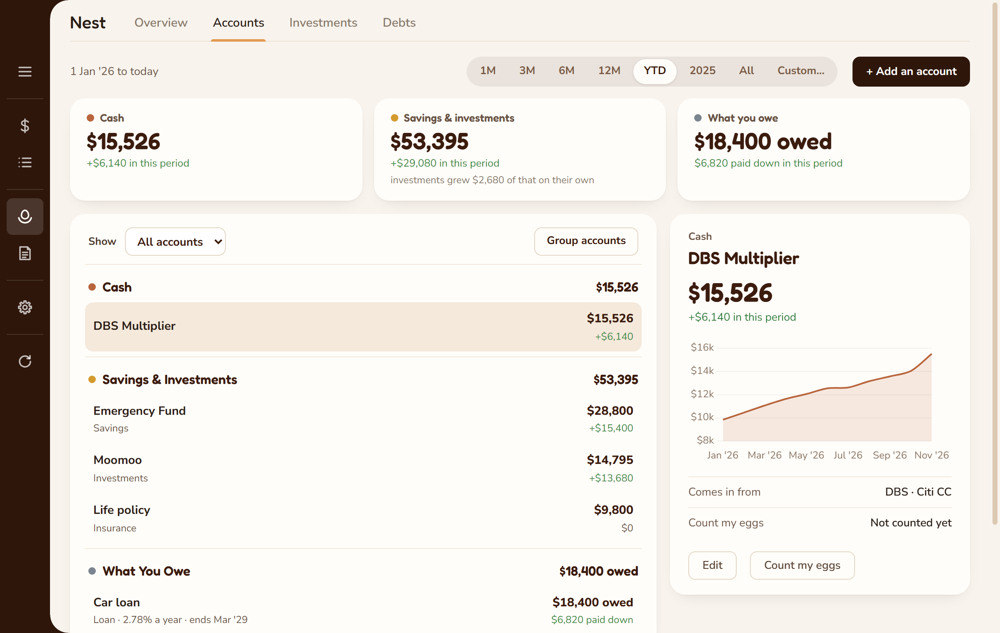
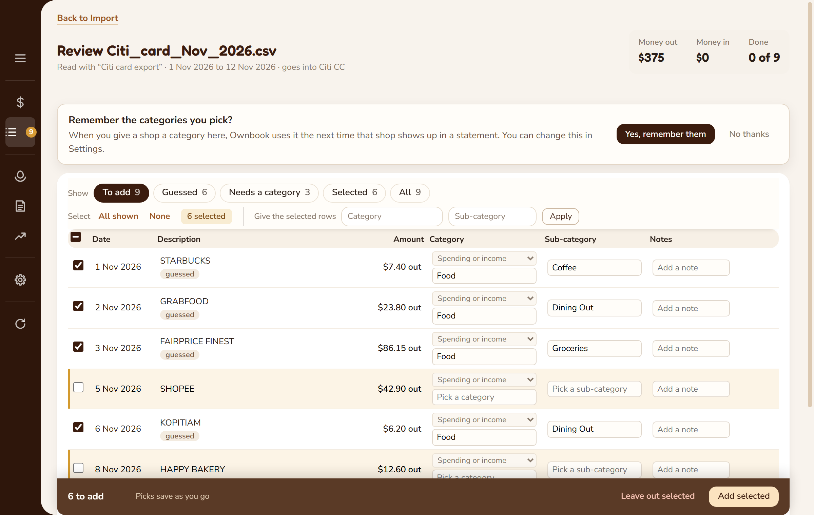
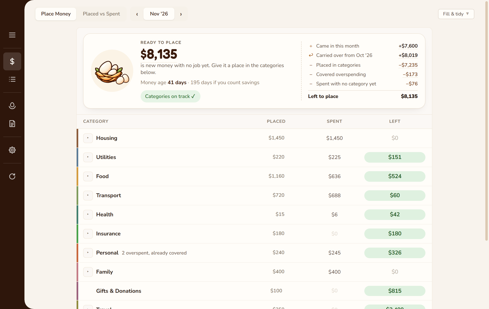
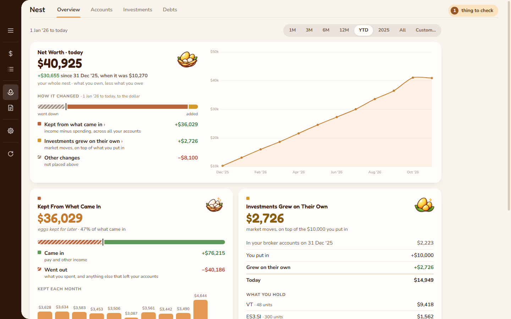
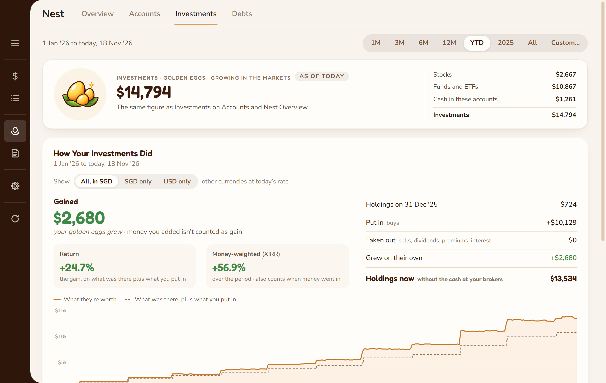
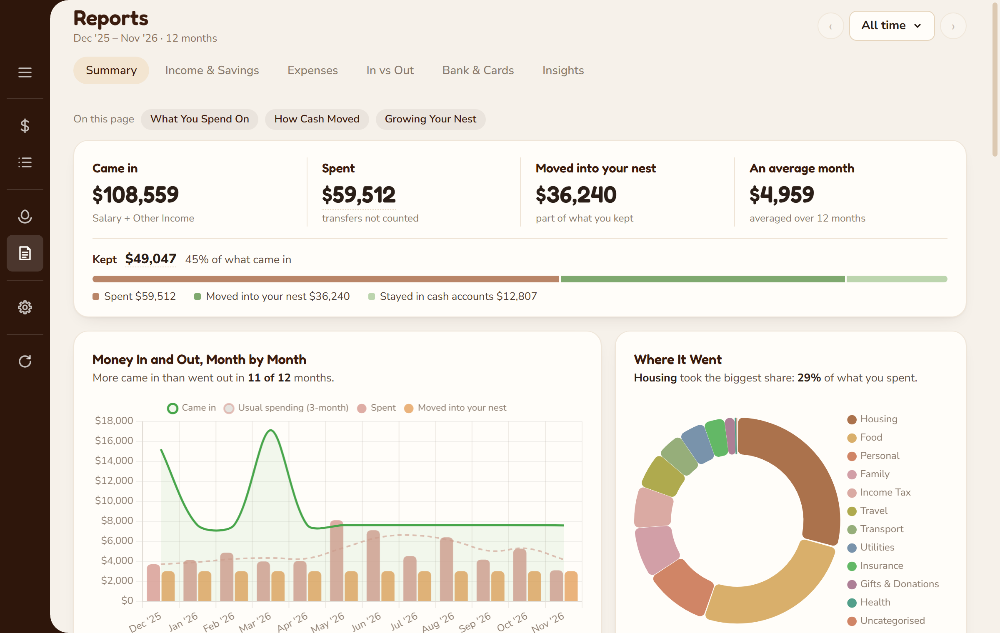

Using Ownbook on your computer
From download to your first monthly budget in about twenty minutes.
1. Install
- Download the Windows app from the download page. It's a single file; there's no installer.
- Make a folder for it, for example
Documents\Ownbook, and move the file there. Unless you choose otherwise, the app keeps your data next to itself, so give it a folder of its own. - Double-click to open. The app opens in its own window and works offline.
2. First run
The first time it opens, the app asks how you'd like to start. You only need one of the three:
- Start Fresh: pick the currency Your money is in (filled in from your computer's region; if the app can't tell, it asks you to pick one), then three short steps:
- What Do You Have Today? Each bank account you spend from with its balance today, and each card with what you owe on it. Ready to place adds up beside them: your bank money less what the cards owe. Roughly right is fine. If your cards owe more than your bank accounts hold, you start at $0 and the rest stays owed on the cards, with a link to give each one a payoff plan. Savings, investments, CPF and loans go in later on Nest › Accounts.
- Where Do You Want to Start? From Today opens your budget now. With Past Statements Too goes to Import first, so Reports shows your past spending; older months never change what you have to place.
- Place it: Budget opens with Your First Month, a list of six steps that tick themselves as you go: add the money you have, place your first dollars, add your spending, check it matches your bank, plan for something bigger, and look back when the month ends. Every category shows while the list is up. Hide this list puts it away.
- Bring in a Backup: open a backup file saved on another computer (Settings › Backups › Save a backup file there). It keeps the currency that book already uses.
- Use a Synced Folder: click Choose a folder and pick a data folder that's already in Google Drive, Dropbox or OneDrive, for example one your other computer uses (or paste its path). It says whether your Ownbook data is already in that folder, and keeps that book's currency.
Skip for now keeps the currency shown in Start fresh and says which one; you can change it any time in Settings › Home Currency.
3. Finding your way
The bar down the left side holds the whole app:
- Budget: Place Money (this month's plan) and Placed vs Spent.
- Transactions: everything you spent and received, with a switch for Investments (your trades) and the Import button for bank statements.
- Nest: what you own and owe, in four tabs: Overview, Accounts, Investments and Debts.
- Reports, then Settings at the bottom, in tabs: Your Book (accounts, home currency, categories), Imports, Data & Backups and App (updates).
Everywhere in the app, a button does something on the page you're on; a brown underlined link takes you to another page; a rounded label only says what something is, like Warming or Count due.
Press Ctrl K (or click the search box at the top) to jump to any page by typing its name. The top bar also shows when you last backed up, and says Update available when there's a new version.
Settings › Home Currency is the currency every total is shown in (the one picked when the book was started). Pick one from the list and the app says what happens before anything changes: investments, broker cash and net worth are converted at today's rate; bank transactions, budgets and goals keep their numbers and only change sign ($1,200 rent shows as £1,200). A backup is made first, and you can change it back. Other currencies are always marked so they can't be mistaken for it: US$, S$, HK$, or the code (EUR, JPY). Yen, won, rupiah, dong, Chilean pesos and forints show no cents.
4. Your data folder
Everything the app knows lives in one folder: a database file plus a few small settings files. Nothing is stored anywhere else.
- To keep it in the cloud, open Settings › Data Folder, click Choose a folder and pick one inside Google Drive, Dropbox or OneDrive (personal), then Save. Restart the app when asked. Settings shows the folder in use now.
- With Google Drive for desktop, use Mirror files mode so the files are really on your computer, not streamed.
- Use the app on one computer at a time. Close it, let the cloud app finish syncing, then open it elsewhere. If it's still open on another computer, this one opens view only, shown in one line at the top (View only · open on …): you can look around, and Edit here moves editing over (the other computer goes view only within a minute).
- If another computer says Ownbook is open there but nothing from it has arrived for 10 minutes or more (and the last it said, it had a different copy of your data from this one), or it saved changes that haven't reached this computer, a message says Changes from … aren't arriving. A computer that simply went to sleep with Ownbook open, holding the same copy as this one, doesn't bring it up. Check the cloud app on both computers. Until the changes come, pick View only for now, Edit anyway, or, if that computer shut down without closing Ownbook, … is closed. Once you choose, it shrinks to one line. A computer with no news for more than 3 days counts as closed, so the message stops by itself.
- Each computer is named in these messages by its Windows name. To call it something clearer, like Work PC, use Rename next to This computer in Settings › Data Folder.
- If two computers both changed things while they weren't syncing, a message at the top says so and lists what each one changed. Nothing is lost while you decide:
- Combine keeps the changes from both. Where the same thing was changed differently on each (one transaction's note, the same budget box), you choose which to keep, with Use … for all for a long list. A transaction or trade added on both, like one statement imported on each, asks Keep one or Keep both. Nothing is saved until you choose Combine, and a backup is made first.
- Use … keeps one computer's copy as it is. It says how many changes the other loses first; they stay in your backups.
- Later carries on with this copy. A slim reminder stays at the top, and Settings › Data Folder lists it under Waiting to combine.
- Have a copy of your data from another computer, like on a USB stick? Settings › Data folder › Combine with a folder… combines it the same way. A copy from before this version starts from your newest backup from before the two stopped syncing; Start from another backup picks a different one.
- If your sync service keeps a spare copy of a data file (for example balances (1).json), Ownbook keeps using the original, and a dot on Settings leads to Needs a Look at the top of that page. What's in it? says how many rows each has; Move to backups puts the copy in your backups folder (_backups/spare copies), so nothing is lost. Each copy shows the day and time it was saved, such as 17 Nov, 9:52 pm.
- The transactions file gets the same care if it was changed outside the app, and if the file that says where your data folder is can't be read (a sync still running), the app stops and says so rather than opening an old copy.
- Changes made on your phone show up by themselves: when the cloud app brings them in, the page refreshes where it was and says Updated with changes from your other device. If you're typing or have a window open, it waits until you're done.
5. Accounts and debts
Every account lives on Nest › Accounts, in three groups: Cash, Savings & Investments and What You Owe (credit cards and loans). The group totals sit across the top; below, each account shows what it's worth and its change. Click an account to see it in the panel beside the list: its month-end balances, its holdings and cash, when it was last counted, and where its money comes in from: the name its transactions carry (from a statement template, a past import, or typed in), money you place in a budget category, the trades you record, or your CPF statements. Choose + Add an account, pick what kind it is, then fill in a short form; Edit in its panel changes it, closes it or deletes it. In Edit, Rename next to a name its transactions carry changes that name on every transaction and on its statement template. Settings › Accounts links here.
Group accounts, at the top of the list, puts any accounts together under a name of your own, such as "Saving for a home": tick the accounts (the ticks show only while you make or change a group), name it and Save group. Show then picks a group: the other accounts grey out, and the panel shows the group's worth and how it got there over the period at the top, in the Nest's words: what it held at the start, what You put in (or took out), what Grew on their own (or fell), and today, with a chart of its worth against what it held at the start plus what you put in. Change this group and Remove this group are in its panel; removing a group leaves its accounts as they are. Groups show on the phone too.
The kinds:
- Cash: a bank account you spend from. Savings: money saved for goals. Investments: a broker account. Insurance: a policy with a cash value. CPF & retirement: money locked away for later.
- When you add an account, type its balance today: Ownbook works out where it started from the transactions it already has. Edit shows its starting balance, the balance before its first transaction.
- Its transactions come in from: tick the names its transactions carry (a layout's account name, or one from a past import), or type one that hasn't come in yet. Leave them all unticked to type its transactions in yourself. A name counts in one account only.
- For an investment account, fill in Its trades are recorded under with the broker account name on your trades. The account is then valued at holdings plus cash.
- Retirement money: tick it for an Investments or Savings account you can't touch until you retire, like SRS. It keeps its holdings and counts, and the Nest shows it under Locked away beside CPF.
- Money you move into it comes out of a budget category: tick it for an account you fund from your budget (savings, investments, policies), and pick the category. Money you move in from your bank then comes out of that category, and the row says Money you place in …. Leave it unticked for everyday accounts: moving money between them is just a transfer.
- Moving money between your own accounts (into savings, to a broker) is kept as a transfer, so it's never counted as spending.
- An account can be deleted only while nothing is in it: no transactions, no starting balance and no holdings. A debt can be removed once nothing is owed on it. Otherwise close it, which keeps its history.
- Things to check: a golden pill at the top right of Budget, Transactions, every Nest tab and Reports, in the same spot, shows only while something is open, with how many. Click it and a panel opens from the right, grouped Your accounts, Your investments and Counts due; most fixes are done right there and the page stays where you were (it catches up when you close the panel). Show the sums compares how your Nest grew from transactions with Reports' money in minus money out, and names what explains any difference, such as Card bills paid in a different month, or paid to a card not in Ownbook. A count you save shows under Done today at the bottom for the rest of the day, with what changed, so you can see it went in. Under Your accounts it lists any money that isn't counted in your Nest: a card or bank whose transactions no account follows, a transfer that went nowhere, card bills missing from a card, a closed account with money left (a closed investment account is fine once its trades sell everything; what didn't come back is its gain or loss, shown in its panel as On its trades, and it's listed only if it still holds something), a bank, savings or cash account that went below zero, open or closed (withdrawn past zero means money came in that isn't recorded, most often interest or profit; it's caught even if it was topped back up later, and a starting balance below zero counts too), transfers to a savings or investment account outside the budget that have no category (Ready to place is off by them until they get one), or a copy of your data another device left behind. Each has its fix: Set up as a credit card (what you owe on it today), It's a bank account (its balance today), Add it to an account I have, Pick where they went, Give them a category (one category per account, for all its transfers at once), Open it again; for an account below zero, Add it as interest (one Interest row for how far below it went, the day before it first went under, counted as income), It was wrong from the start (raises its starting balance instead; the only fix offered when the starting balance itself is below zero) or It really was overdrawn (unflags it: it's listed under Your choices with Check it again, and comes back by itself only if it goes deeper). Fixing a transaction yourself clears an item too: the pill counts again as soon as you save. If a check can't run, the panel says so (Some checks couldn't run, or Couldn't check your investments) instead of showing everything as tracked, and tries again the next time it opens. Fixes are buttons; anything that only takes you somewhere to look is an underlined link beside them. See its transactions or See them opens Transactions on just the rows at fault, from every month: for an account, its own rows and the transfers into it; or the rows with no account, or with a date that can't be read. Don't keep a balance for it leaves one out on purpose; it's listed under Your choices with Track it again. Show the sums compares how the Nest grew from transactions with Reports' money in minus money out, and names each difference, including balance adjustments from your counts and any starting balance set or changed in that time (when, which account, from what to what). After importing a statement from a new card or bank, the review asks where its money lives.
- A transfer always lands somewhere: it has to go to one of your Nest accounts, so money can't leave one account and arrive nowhere. When you commit several changes at once on Transactions, they're all saved or, if one can't be, none is, and the app says which one and why. A closed account that still has money in it shows what's left instead of zero.
- Renaming keeps every balance: rename an account with Edit and its transactions, transfers and category come with it. A bank or card's transactions count in one Nest account only, and the app says so if you try to count them twice.
- Close an account you no longer use: its history stays. On Nest › Accounts a closed account with nothing left in it is hidden, in the list and in Month by Month; Show closed accounts under the list brings it back. The phone doesn't show them.
Debts have their own tab: Nest › Debts › + Add a debt. Enter what you owe today, the rate, the monthly payment and when it ends. Payments are transfers from your bank account to the debt, and interest is added each month from the rate. If the balance ever drifts from your lender's, choose Edit and type in what you owe today.
Credit cards are added on Nest › Accounts: + Add an account → Credit card, tick the name its transactions carry, and type in what you owe today from your latest statement. A card has no rate or end date; it sits under What You Owe. Spending on the card is owed at once, and paying the bill brings it back down, so Kept From What Came In on the Nest matches Reports. A card paid in full each bill stays out of Plan Your Payoff. When some is left over after a bill, its row says Carried since the month it started, and its panel has Add a payoff plan: on Debts, type the card's rate and what you'll pay each month, and it joins the plan. The rate is only for the plan; the card's statement brings the real interest.
Card statements sometimes leave the payment line out. Each bill you pay from your bank is matched to a payment on the card, and the app learns what your bank calls each card as it goes. When one is missing, the card's row says so ("1 payment from DBS isn't on this card"): choose Add it to put it on the card, or Not for this card. The same line shows when you review that card's statement. A bill to a card name the app hasn't seen asks once which card it was for.

6. Import transactions
- Download CSV statements from your bank's website.
- On Transactions, choose Import, drop in one or more files (or click browse) and choose Read files.
- Each file becomes a card under Unfinished Imports, with its money out and money in and what was checked. If every row already has a category and nothing needs a look, choose Add and you're done. A row the app couldn't read (an odd date or amount, a line cut short, or a DBS row in another currency) is listed by its line number rather than left out quietly; add it by hand from your statement. If two of your saved layouts read a file the same way, the app asks Which account is this? instead of picking one.
- Otherwise choose Review. Rows marked Guessed got their category from how you tagged similar transactions before; change any that are wrong (picking a different category clears a sub-category that doesn't belong to it), mark transfers to your own accounts, or Split one across categories (each line picks its category from the same list as the rows). Rows that look already in Transactions are held back under Already in Transactions. Show picks which rows you see: Guessed lists only the ones Ownbook filled in, to check them quickly, and Selected only the ticked ones.
- Tick the rows you're happy with and choose Add selected in the bar at the bottom. Your first import asks once whether to remember the categories you pick; then the same shop gets the same category next time. Change it any time in Settings › Imports; the phone follows the same choice.

No need to finish in one sitting: every category you pick is saved as you go (nothing is added to Transactions until you press Add selected), and you can carry on from the phone app too (its picks show up here once the files sync). Leave out selected sets rows aside; under Left out, Put back returns one row and Put all back returns them all, each with the category it had. Each finished import (under Recent Imports) is named after the account it went into; point at the name to see the file. Take back out removes everything it added, and Remove from this list deletes the import itself, with its left-out rows, from both the computer and the phone; transactions it added stay. Your saved templates are under Settings › Import templates.
A layout that comes with the app. For some banks, Ownbook already knows the file. It shows what it read and asks once: choose the account it goes into and Use this layout. That layout is then yours, and files like it are read without asking.
A bank that isn't recognised? The app says so and offers Set up this bank's layout. It opens with its own guess of which column is the date, the description and the amount; check them against the preview and save. The file is then read straight away, and every statement like it after that. If you've added your own Claude API key (from Anthropic) under Settings › AI Settings, it can suggest the layout too; a few sample rows of that file are sent to do so. If a bank changes its file, the app tells you the layout needs a look rather than guessing.
7. Build your budget
The budget works with money you already have, one month at a time.
- At the top of Budget, Ready to place shows money that has arrived and has no place yet, with what came in, what carried over and what you've placed. In a book you've just started, the money your accounts held when you added them counts once, as From your accounts' starting balances, so you can place it straight away; it isn't counted as income on Reports. If you've placed more than came in it says Over-placed: take some back from a category that can spare it, or it comes out of next month.
- Type an amount into a category's Placed cell. Left shows what's left to spend in it this month. If a category's panel is open on the right, it moves to the category whose cell you're typing in.
- Keep going until nothing is left to place. Don't place money you don't have yet: place it when it arrives.
- When a category runs over, it's marked overspent. Click the category to cover it by moving money in from another, or let it come out of Ready to place.
- Next month, what you didn't spend carries forward in each category.
The card also shows your Money age: how long money waits between coming in and going out, and the same again counting savings. Categories with nothing placed, spent or left fold under Show 3 empty categories at the bottom of the list. Fill & tidy fills the whole month at once with What I placed last month, What I usually spend (the last 3 months) or What's been spent so far; a category's own panel offers the same three for that one category.
- Targets: set a monthly target on a category to see what it needs each month.
- Savings goals sit on a category you already have. Click it on Place Money and choose Set a savings goal: Save up an amount, By a month if you like, and Then: Spend it, then finish (a trip, a new laptop) or Keep topping it up (insurance or another bill that comes round again). A goal adds no category of its own: you tag spending as you always do, so Reports still show it under its category. Its row shows where it stands: Warming · saving ($1,350 of $3,000, with what to place each month to have it on time, like Place $236 a month to have it by May '27), Hatched · ready to spend when the category's Left reaches the goal, and Spending while you use it, which is never shown as over budget while money is left. The panel has Place $236 in Nov, Change goal, and Finish this goal, which puts what's left back in Ready to place, as Retire does; a goal you keep topping up has Stop this goal instead. Pooling a group moves any goals on its categories onto the pool (it says so before you confirm; two or more add up into one). On a pooled group the goal covers the whole pool: every trip in it spends from the one pot, and retiring an old trip doesn't touch the goal. Savings goals first, above the list, moves every goal to the top (only the order changes; it's remembered on that computer).
- Placed vs Spent, the tab next to Place Money, looks back over your finished months. Choose 6 months, 12 months or 24 months, and step through time with the arrows beside the months. Placed is each line's usual month, and each group's is the sum of its lines. A plain figure stayed within what you placed. A word appears only when there's something to say: how far over or short a line went (short means it ran out, its word tagged red with a cracked egg; over gets an amber tag), from savings for a month paid from savings, one you saved up for, or back when money came back. It's for looking back, so you place money on Place Money. Click a line to slide out its story: a chart with money coming back drawn below the line, each month's figures and its biggest items. You can place next month's amount from there when the line has a steady one.
- Drag categories to reorder them. To plan for something new before any money is spent on it (a trip, a wedding), point at a group and choose + Add a category. When it's over, open the category and choose Retire at the bottom: it leaves Budget and the pickers, and its transactions keep it. Tagging a transaction with a new name adds a category too.
- Money placed in a category stays with it: one with money placed can't be deleted in Settings or set to Not on Budget until those months are $0 (Retire keeps its past months as they were). Spending you haven't given a category yet comes out of Ready to place until you tag it.
- In Settings › Your Book, each category shows how many sub-categories it has and how often it's used, then the tags that apply to it: On Budget (a line on the Budget page), Spending (counted in Reports' spending) and, on income categories, Income. Click a tag to switch it. To count a category as income, open it and click Not income.

8. Work with transactions
- Transactions opens on the newest month, like the phone. The month button at the top (such as Oct '26 ▾) opens a small calendar of months, with All Months under it; beside it are the month's In, Out and Net and how many transactions match. The heading stays in view while the rows scroll.
- Under it are the search box and one chip for each filter: Category, Account and Type. Choose a chip to pick from its list; the Category list has each category's sub-categories under it, and you can type to find one. A chip that's set says what it picked, such as Account: Citi CC ×; its × takes it off. A chip such as 2 uncategorised shows only the rows that still need a category. Clear filters takes them all off and keeps the month.
- The Category column says the category and sub-category together, such as Food › Dining Out. Editing a row shows a box for each. Each day has a short heading with its date and net. Once a filter picks a category and sub-category, the column steps aside because the chip already says it, and comes back while you edit a row. Columns brings Sub-Category back as a column of its own; drag a column's heading to move it. Your search, filters and sort stay as they were after Save changes.
- Edit any row in place (date, category, description, amount and account; a split line's date and amounts change through Edit split; a row moved to another month stays in view until you commit), or + Add a transaction for cash spends: a short form opens above the list (date, description, amount, account, then the category, or Transfer and the account it went to). The date starts in the month you're looking at. Add puts it with your changes and keeps the form open for the next one, with the same date and account; Done closes it. Save changes saves them and keeps you where you were, with a short Saved. note (the investment trades list does the same). Enter adds, Esc closes the form. If a save can't go through, the app says why. If a row you changed was changed in another window or on the phone after this page opened, nothing is saved and the app asks you to reload first.
- Split one payment across categories (a supermarket bill that was half groceries, half household).
9. Your nest
Nest › Overview is the big picture: everything you own, less what you owe. Pick a period at the top (a month, three months, the year, or since you started).
- Net worth comes first, in one wide card: today's figure, how much it moved since the start of the period, its chart, and How it changed: the change to the dollar, split into its reasons: what you kept from what came in, what your investments grew on their own, and what CPF added on its own. Each reason has its own card below, numbered in the same order; click a reason to go to its card.
- Kept From What Came In: Came in less Went out (what you spent, and anything else that left your accounts). Moving money between your own accounts, such as from the bank into investments, doesn't count either way. Below it, what you kept each month; point at a month to see what came in, what went out and what you kept. This is the app's one savings rate: % of what came in is the same sum on the Nest, Reports and a Budget goal to save a share of what comes in. Balance adjustments from Count my eggs aren't in it; the net worth card shows them as their own reason, Balance adjustments from your counts, and interest added to loans as Interest on what you owe. A main figure with a faint dotted underline (Ready to place and each line under it, Kept, net worth, investment returns, CPF added, Spent and Reports' Net) shows How it's worked out when you rest the pointer on it a moment, or tab to it: the sum line by line, and what's counted and what's left out. Move into the card to click a link in it; move away, press Esc or scroll and it goes.
- Investments grew on their own: what was in your broker accounts at the start, what you put in, what grew on its own, and what's there today, adding up to the dollar. Below it, your biggest holdings, All holdings and how they did, and Count my eggs.
- CPF added on its own: what CPF added that you didn't move in yourself, split into From your pay, Interest, Paid toward your home, Insurance and medical, and anything else. It shows only when you have CPF records.
- Where It Sits: cash, savings, investments, money locked away, and what you've borrowed.

10. Investments
- + Add a transaction under Transactions › Investments opens Add an investment, one box for shares, funds and coins. Every kind is listed down the left under four headings: Trade (Bought, Sold, Swap, Option, Fee for a platform or custody fee), Earn (Cash, or Shares or coins given to you), Transfer (Money in, Money out, Moved) and Adjust (Correction). Then type What (a ticker or a coin), Where it's held, the units and the price. That day's close fills in. How it counts, on the right, shows what each figure does (cash, units, money put in, earned) as you type, with the last few rows at that place below it.
- Earn › Cash: pick Paid on. The list is grouped by how it will be saved: Dividend (a share or fund you hold there), Bond coupon (a bond), Interest (cash at the broker) or Bonus or promotion. The box shows Saved as, and all four count as money made. Shares or coins are saved as free shares, or a coin reward at a place that holds coins, at that day's worth: no cost, counted as money made. A Fee counts as a cost. Correction makes cash or units match the broker (More or Less) and is neither money put in nor earned; it links to Count my eggs for a full match.
- On Nest › Investments, what you sold and received now also shows Interest and bonuses, Rewards (free shares and coin rewards) and Fees, all in Made from these.
- A ticker you've traded before brings its name, category and strategy; More details has them, and the kind (A share or A fund or ETF). A dividend takes the Amount received, any Tax held back and the Shares held (filled in from what you hold). An option takes Put or Call, Bought or Sold, the strike, the expiry, the contracts (each is 100 shares) and the Premium per share. Copy on a trade opens the box with that trade's kind and values, dated today. Editing a trade keeps it to a kind Ownbook reads: Side lists only the sides its Type can have (a Cash row can be Transfer, Interest, Bonus, Fee, Opening or Adjust, for example), so a row can't be saved as a mix the figures would leave out.
- Or bring in your broker's history with Import CSV: Interactive Brokers statements are read directly; for other brokers you match their columns once.
- Things to check says when a count is due, under Counts due, one line per account: a match is waiting (Finish the match), holds nothing yet (a balance with no holdings: Count what it holds), or not matched with the broker since a day over a year ago (Match with the broker; Not now hides it for 3 months). The dark button on each starts the count; Not now is the quiet words after it. A trade that doesn't add up also offers Match with the broker. Count my eggs on What You Hold counts any account any time; it lists every investment account and where its count stands.
- Count my eggs · add what you hold: for an account with no trades in Ownbook, type what the broker or wallet app shows today, units and cash. Price that day fills in from the close; Paid (what you paid in total) is optional. No old trades are needed: Ownbook values the account from that day on, and the step from the money you'd sent to its real worth shows as Brought up to date, never as gain. Counted on can be an earlier day, with that day's prices. Pick an investment account on Nest › Accounts to find Count my eggs in its panel, with when it was last Matched against broker records. It is also on Nest › Investments › What you hold › By account.
- Nest › Investments: today's figure, then how they did (holdings only: Holdings now leaves out the cash at your brokers, which today's figure counts) and what you sold over the period, then What You Hold (By holding, By currency or By account). Accounts with only a balance are listed at the end of By account, with Count what it holds.
- Count my eggs · match my broker: on an account with trades, Ownbook's units and cash are filled in. Change only what the broker shows differently (search, or show only Changed), add anything missing, then Compare. Pick what each difference was: Bought, not recorded (asks when), Dividend reinvested, Moved in or out, Sold, not recorded, or Just match it. Fewer units leave at what they cost, so no made-up sale profit. A mistyped trade is pointed at with its fix. Cash is the final check: Save all only works once every line has a reason and cash agrees, and then everything goes in together, with a record of what the broker showed. Finish later keeps your choices; the account says Match waiting. A box you clear isn't read as none: type 0 when the broker holds none. If your investments changed in another window or on the phone after the count opened, saving asks you to reload and count again, so nothing is counted twice.
- Swap between any two currencies is saved as two linked legs (the currency you gave and the one you got) so both cash balances stay right. Each leg keeps its amount exactly as typed. Of Give, Get and the Rate, type any two and the third is worked out: the rate at first, so the amounts match your statement to the cent. The rate reads as 1 of the foreign currency in your home currency (Rate: 1 USD in SGD). Type in the worked-out one (say, the rate your broker gave) and the one you typed longest ago is worked out instead.
- Moved for shares: pick From and To. Between two of your own places, what they cost goes with them. From Somewhere else (another broker you don't track here) they arrive at What they cost you; to Somewhere else they leave at what they cost. The account's cash doesn't change and it's never a sale. Moving out more than you hold shows in Things to check.
- Money in and Money out: money between a bank account and the broker. Pick the bank (or A bank Ownbook doesn't follow) and the broker; the broker's cash goes up or down, and nothing counts as earned.
- Coins use the same box: pick a place that holds coins in Where, or + Add a wallet or exchange (it becomes an investment account). Bought and Sold; Earn › Shares or coins for a staking reward, interest, a promotion or an airdrop (no cost, counted as money made); Moved from one of your places to another (type the Network fee in coins and the rest arrives, with what it cost); Swap one coin for another (a sale and a buy at the Worth at the time, cash unchanged). The price that day fills in from the coin's USD price × that day's rate.
- Count my eggs on a bank, savings or card account: pick it on Nest › Accounts and choose Count my eggs in its panel (the panel also says when it was last counted), or open Count my eggs, which lists every account. Type what your bank app shows (for a card, Owed on it, per your card app) and the day it's for. Ownbook compares its own balance at the end of that day. When they differ, it lists what it can find (days since the newest transaction, two rows that look typed twice, a card bill not on the card), then asks what the rest is: Interest I didn't record, A fee or charge I didn't record (or a refund) in the category you pick, Just match it, which posts one dated Balance adjustment row that goes into or out of Ready to place and counts as neither spending nor income, or It was wrong from the start, which changes the starting balance instead (every month back to the start moves). Nothing is saved until you press the button. Nothing asks you later while you type or import: if a change makes a count stop matching what the bank showed, it's listed in Things to check. A change that explains an adjustment offers Take the adjustment out; any other offers Adjust by the difference, Count again or Leave it. An account you've used for 90 days and never counted is mentioned there once (Not now puts that away).
- Counting coins in Count my eggs: pick Coin on a line (or + Add a coin). On a match, a coin can also be Reward, not recorded or Network fees. When Ownbook can tell which reason it is, that reason comes picked with a line saying why; Something else shows the rest.
- An account with only a balance (no trades) can be counted once to replace it: set Counted on to the day its balance started, type what it held, and Replace the balance and save. The opening balance is removed (a backup is taken first); money moved in or out stays, because the account on the other side needs it.
- How Your Investments Did shows the gain over the period you pick, apart from money you put in, as a plain return and a money-weighted one (XIRR). Past values use the price each holding really closed at that day; dividends count on the day they're paid.
- Things to check (the golden pill at the top) lists under Your investments a holding whose units or cost don't add up, with the trade at fault and a Fix. It's right is remembered for those exact figures and comes back by itself if the trades change.
- Deposits are counted once. A Money in or Money out at the broker is matched with the transfer on the bank side of the same account: the same amount within 5 days either way, or two transfers that add up to it (or one that two add up to). Things to check lists a deposit the bank side doesn't have (it's still counted, on its own; Same money as … matches it by hand when a fee or a currency makes the amounts differ) and a bank transfer the broker's records don't have: Add it on the broker side records the matching Money in (or Money out) itself, the amount, day, bank and account filled in from the transfer and said on the item, and the item clears; Change it first opens the Add box filled in with it, from any page; with several, Add all on the broker side records each. It's right hides either. In What you hold › By account, each account lists its matched deposits; Not the same money undoes a match.
- Tidy up investment rows, in Things to check, lists rows saved before the add box had a kind for them: promotions saved as bond coupons, a sign-up bonus saved as interest, free shares counted as money put in, a rounding fix saved as money moved in. They're grouped, each with what it changes, and the totals that change are shown first. Untick any you want left as they are (they aren't suggested again), then Apply: a backup is made first, and Undo puts every row back. Keep hides Undo.

11. Reports
Pick a range (this year, the last 12 months, all time, or your own dates) or a single month. The Summary shows what came in, what you spent, what you moved into your nest and an average month, then Kept: what came in less everything that went out (Kept $43,416 · 47% of what came in), with a bar and its parts: Spent, Moved into your nest and Stayed in cash accounts (money in categories kept out of Spent shows as Other money out; in a month you spent more than came in, Taken from savings). The phone's Spent and Kept card says the same figures in the same words; the other tabs dig into income and savings, expenses, In vs Out (every category as a row, month by month, with what stayed in cash accounts at the bottom), and your bank and card accounts. On a tab with several sections, the On this page links at the top jump straight to each one. On Expenses, By category gives each of your biggest categories a card: its parts in a table and month by month, each part in its own colour, and anything past the six biggest parts together as one "more" line.
Under What You Spend On, point at a month's bar to see that month against usual, where it went and its largest payment; click it to open those payments in Transactions. Point at a category's name for the whole range.
On Insights, Who You Pay starts with Out of the Ordinary: payees you hadn't paid before, ones back after more than 6 months, and bills (paid about once a month at a steady amount) that came to 20% more than their usual, each with why it's there, like $146, usually $110. New payees count only from 3% of a usual month's spending, so a coffee somewhere new isn't listed. The phone's card of the same name uses the same rule.
In the money flow, categories each under a dollar are drawn together as Small amounts; Other money in appears only for money that really has no category.
Reports counts transactions up to today: one dated later shows up once its day comes, the same as your balances.
Comparisons say what changed in words, for example Spent $300 more than usual; red is worse for you, green better. A category where refunds beat spending shows as money back. In vs Out keeps its signs (money in plain, money out with a minus, so the rows add up); point at any figure to read it in words, like $1,450 spent. Balance adjustments from Count my eggs are neither spending nor income: the Summary says how much there was in those dates on its own line (See them opens them in Transactions), and In vs Out has a Balance adjustments line under Stayed in Cash Accounts, each month opening that month's. On Investments, each trade says the cash it Paid or Received.

12. Backups & updates
- Automatic snapshots: the app takes a dated snapshot of your data as you use it, and before every import. Restore any of them from Settings › Backups, or Take a snapshot now.
- Kept when copies were combined (also in Settings → Backups): when two computers' copies are combined or one is chosen, this copy is kept first, and a copy that isn't used is kept too. These are never removed.
- Save a backup file (also in Settings → Backups) puts everything in one zip, handy for moving to a new computer. Restore from a backup file brings one back. A backup with no data in it, or a damaged one, is refused before anything changes.
- Updates: when a new version is out, the top bar says Update available and Settings › App Updates offers it. The update replaces the app file and keeps the previous version so it can go back if anything fails. Your data folder isn't touched. Once a new version has downloaded, the sidebar's Restart app reads Restart to update: restarting starts the new version. Restart app also looks for a newer version first and fetches it (the box shows how far it has got), so a restart always opens the newest version.
- Something looks stuck? Restart app at the bottom of the left bar reopens it in a few seconds.
Getting help
Something not working, or a bank you'd like supported? Report it here. Using a phone too? Read the Android guide.